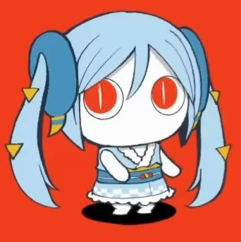
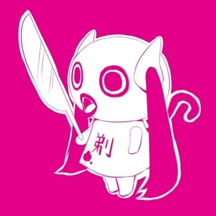
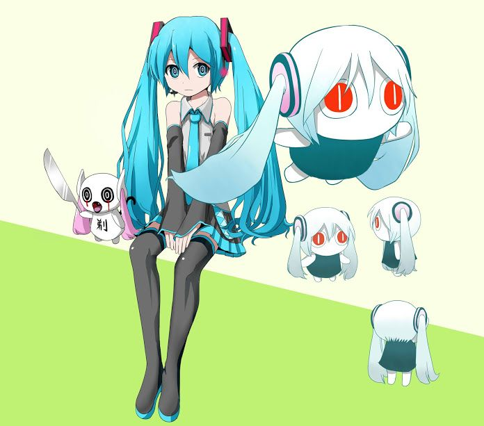
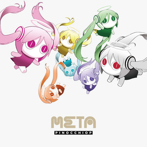
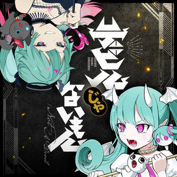

| Born | September 15,1986 |
|---|---|
| Genre | Vocaloid • Electronica • Technopop |
| Occupations | Songwriter • Illustrator |
| Instruments | Vocals • Keyboard |
| Years Active | 2009 - Present |
Early Life and Career
PinocchioP began sharing his VOC creations online in , and just a year later, he released his debut album Hana ga Nobiru (花がのびる).
His stage name traces back to his first upload, Hanauta (花唄), which featured an illustration of Hatsune Miku with a long nose reminiscent of Pinocchio. Initially, his motivation was simple curiosity but later he thought:
It might be fun to post something too. – PinocchioP
Although he originally dreamed of becoming a manga artist, the process left him drained, and he turned to music as a form of escape.
His original characters, such as Aimaina and Dōshite-chan (どうしてちゃん), embody his fascination with ambiguity and questioning. Dōshite-chan, for instance, was born from his curiosity about unresolved problems. His lyrics reflect influences from diverse sources.
Popular Albums
- Kotobuki: Best-of collection including "All I Need are Things I Like" and "Slowmotion".
- META: Features "God-ish" and "Cosmetic World".
- Underworld: Includes "Playing Immortal".
Popular Songs
-
God-ish – One of his most iconic tracks, blending sharp lyrics with electronic energy.
Listen on Youtube!
-
Anonymous M – A collaboration featuring Hatsune Miku & Arufa, known for its playful yet biting tone.
Listen on Youtube!
-
Nee Nee Nee. – A catchy track with repetitive phrasing that sticks in listeners’ minds.
Listen on Youtube!
-
Reincarnation Apple – A fan favorite with surreal imagery and strong rhythm.
Listen on Youtube!
Did You Know?
- 🎤 His stage name comes from his first upload Hanauta, featuring Miku with a Pinocchio-like nose.
- 📖 He originally aspired to be a manga artist before turning to music.
- 🎶 He was inspired to start composing after hearing Agoaniki’s Double Lariat on Nico Nico Douga.
- 🖌️ He also works as an illustrator, contributing artwork to campaigns like Pentel i+ × Hatsune Miku.
- 🎮 In 2012, he contributed the song Gorilla ga Irunda to the arcade game SOUND VOLTEX BOOTH.
- 🎤 His live shows often layer his own singing over Hatsune Miku’s voice for a unique performance style.
- 👾 He created quirky characters like Aimaina and Dōshite-chan to explore ambiguity and questioning.
- 🚗 In 2016, he illustrated characters for Toyota’s PRIUS! IMPOSSIBLE GIRLS project.
- 🎧 In 2020, he launched his solo project Kudō Daihakken, singing with his own voice instead of Vocaloid.
Gallery




